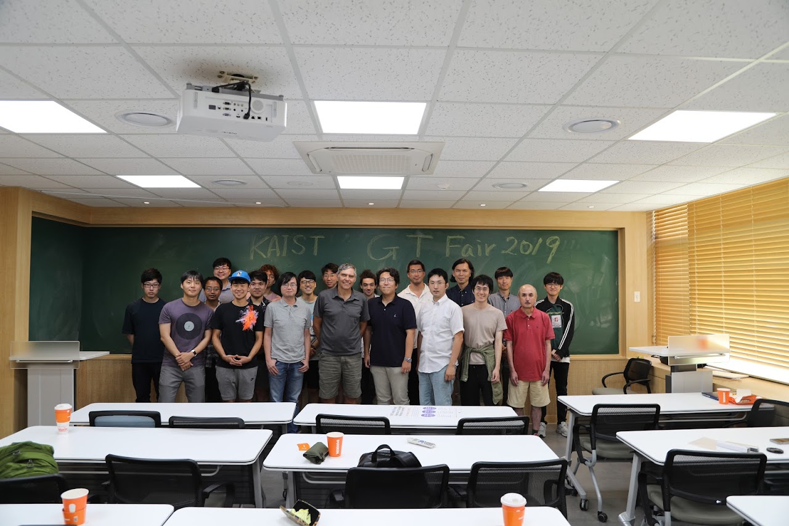

Geometric Topology Fair 2019
KAIST Advanced Institute for Science-X (KAIX) hosts a thematic program this summer. As a part of the program, 17th Geometric Topology Fair will run from July 28th to August 3rd at the department of Mathematical Sciences, KAIST.
Every one is welcome, Here is a direction for how to come to Daejeon and KAIST.

All talks are at the building E6-1, Room 1401,
except the welcoming tea time on the first day will be at R
The schedule is as in the table below.
Note that the schedule for the talks on Wednesday is different from other days.
Shinpei Baba (Osaka University)
Title: Neck-Pinching of CP^1-structures.
Abstract: In this talk, we consider degeneration of certain geometric structures on a closed surface. A CP^1-structure is a geometric structure on a surface modeled on CP^1, and its holonomy representation is from the fundamental group of the surface into PSL(2, C). We consider a path of CP^1-structures which leaves every compact subset of the deformation space and, on the other hand, its holonomy converges. Under the additional assumption that, along the path, the complex structure is pinched along a loop, we describe its asymptotic behavior interns of pleated surfaces, holomorphic quadratic differentials, and developing maps.
Mladen Bestvina (University of Utah)
Title: Proper actions on finite products of quasi-trees.
Abstract: We say that a finitely generated group G has property (QT) if it acts isometrically on a finite product of quasi-trees so that orbit maps are quasi-isometric embeddings. This property is a strong form of finiteness of asymptotic dimension. We prove that residually finite hyperbolic groups and mapping class groups have property (QT). The latter statement was also announced by Ursula Hamenstädt, but her approach is different. This is joint work with Ken Bromberg and Koji Fujiwara.
Ser-Wei Fu (NCTS, National Taiwan University)
Title: Slices of quadratic differentials and finite length rigidity
Abstract: Quadratic differentials are natural objects used to describe Teichmuller geodesics. Flat surfaces induced by quadratic differentials are of interest on their own as they are related to billiards and CAT(0) geometry. It is known that for a fixed topological surface, a hyperbolic metric is uniquely determined (up to isotopy) by the length of a finite set of simple closed curves but a flat metric doesn’t share the same property. It is therefore of interest to restrict to subsets of flat metrics when considering the finite length rigidity property. In this talk I will consider slices of quadratic differentials that share a vertical measured foliation and discuss some preliminary observations.
Koji Fujiwara (Kyoto University)
Title: Asymptotic Dimension of the Arc Graphs.
Abstract: I discuss the asymptotic dimension of the arc complex of a surface and give upper bounds that are quadratic on the genus and the number of punctures. This is a joint work with Saul Schleimer.
Sangjin Lee (UCLA)
Title : A higher-dimensional generalization of pseudo-Anosov automorphisms
Abstract : In 80's, Thurston classified the mapping class group of orientable surfaces. A generic element of the mapping class group is of the pseudo-Anosov type, i.e., a generic element preserves a transversal pair of (singular) measured foliations. In 2014, from pseudo-Anosov surface automorphisms, Dimitrov, Haiden, Katzarkov and Kontsevich constructed Bridgeland stability conditions on the Fukaya category of the surface. They also gave an open question asking the existence of higher-dimensional generalization of pseudo-Anosov automorphisms on symplectic manifolds. To answer their question, we found a construction of symplectomorphisms which preserve a stable Lagrangian lamination. In this talk, we will discuss the constructions.
Yi Liu (Peking University)
Title: Mapping classes are almost determined by their finite quotient actions
Abstract: For any closed surface, we say that two mapping classes are procongruently conjugate if they induce conjugate actions on the outer automorphism group of the profinite completion of the surface group. In this talk, I will sketch a proof of the following result: Every procongruent conjugacy class contains only finitely many conjugacy classes of mapping classes.
Hidetoshi Masai (Tokyo Tech)
Title: On the Continuity of Drifts of Mapping Class Groups
Abstract: When a group is acting on a space isometrically, we may consider the "translation distance" of random walks, which is called the drift. In this talk, we consider the mapping class group acting on the Teichmüller space. Then we discuss if the drift varies continuously with the transition probability measures.
Chenxi Wu (Rutgers University)
Title: Kazhdan's theorem on metric graphs
Abstract: There is an analogy between the study of metric graphs and the study of Riemann surfaces, and a question is to construct uniformization theorem for metric graphs which would require a concept of "hyperbolic metric" on it. With Farbod Shokrieh, we found a graph theoretic analogy of a classical result by Kazhdan on the limit of canonical, or Bergman metric under a tower of normal covers, which indicates that the limiting metric might be such a candidate. I will also discuss generalizations of it to higher dimensional simplicial complex and some further questions.